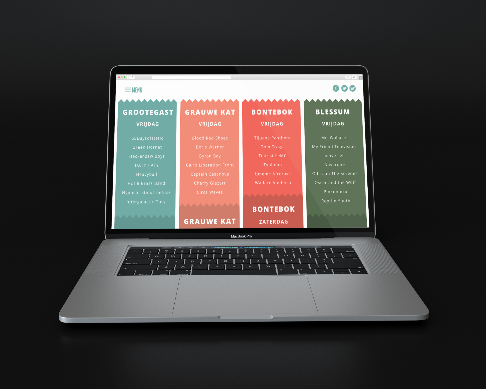

Portfolio
Interactieve film UMCG
Video | Tweede jaar | Visual Design
Het interactieve filmpje is gemaakt voor het Centrum voor Revalidatie van het UMCG voor kinderen tussen de 3 en de 5 jaar. Niet alleen de kinderen zijn de doelgroep, maar hun ouders spelen ook een rol tijdens het revalidatieproces. Het filmpje kan ingesproken worden door de ouders, zodat de kinderen het filmpje op een vertrouwde manier kennis kunnen maken met het ziekenhuisbezoek.

Cantina Mexicana
Poster | Tweede jaar | Visual Design
In het tweede jaar werd een campagne ontworpen voor Cantina Mexicana. Cantina Mexicana, een Mexicaans restaurant aan de Vismarkt in Groningen, zag een terugloop in het aantal gasten. Het was aan de studenten om een crossmediale experience te bedenken en te visualiseren. Deze werd gepresenteerd aan de opdrachtgever.

Magical Maze
Video | Tweede jaar | Game Design
In het spel Magical Maze moet de speler binnen de tijd de uitgang vinden van een doolhof. Het doolhof werkt de speler echter tegen door tijdens het spelen verschillende vallen te plaatsen.

Festival website
Website | Eerste jaar | Interaction Design


Making of.. Cantina Mexicana
Video | Tweede jaar | Visual Design